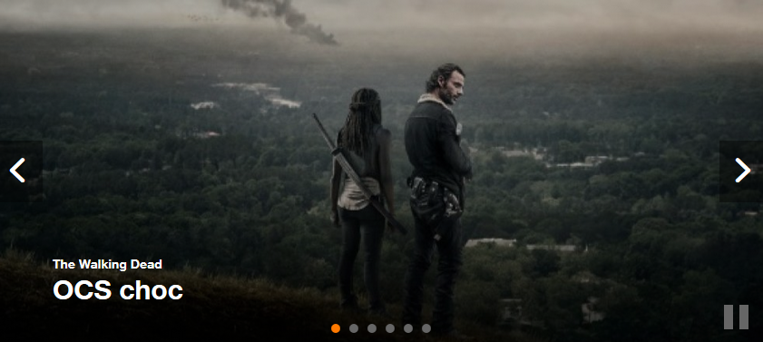

Navigation générale
S’assurer que l’utilisateur navigue facilement dans une page et plus globalement dans un site
Rendre les intitulés des liens et des boutons accessibles #
Cible : tout le monde, et en particulier les personnes déficientes visuelles, cognitives ou ayant un déficit d’attention et les utilisateurs de commande vocale.
Quand : dès la phase de conception et lors du développement.
Description :
Il faut satisfaire à ces deux impératifs pour qu'un lien ou un bouton soit accessible :
-
Tout d'abord, rendre les intitulés des liens et des boutons compréhensibles hors contexte, en particulier pour les déficients visuels. Lors de la navigation avec un lecteur d’écran, il est possible d’accéder à la liste des liens de la page pour naviguer rapidement. Si votre page contient plusieurs liens « en savoir plus », il sera impossible de les différencier les uns des autres.
S’il n’est pas possible de rendre un lien ou un bouton plus explicite par l'intitulé, faute de place, mais que l’intitulé actuel est suffisant dans son contexte, on doit utiliser un attributtitlepour faire apparaître une info-bulle, reprenant l'ensemble de l'information nécessaire, au survol avec la souris, mais également compléter l'intitulé par un contenu supplémentaire, au choix, via :- un morceau de texte caché par masquage accessible via CSS
- en utilisant un attribut
aria-labelouaria-labelledbyreprenant l'intégralité du contenu dutitle(cf. les attributs ARIA qui peuvent vous sauver).
-
De plus, le texte de l'étiquette affichée (l'intitulé textuel ou texte de l'image visible à l'écran) pour tout composant d'interface (lien, bouton...) doit être présent (en premier, si possible) dans le nom (accessible) de ce composant (pour aller plus loin, Le nom accessible en HTML.
Par exemple dans l’image ci-dessous, les deux éléments « valider » ne sont pas suffisamment explicites pour une personne utilisant un lecteur d’écran et ne bénéficiant pas obligatoirement du contexte. En revanche, quand on voit l’écran, le contexte fait qu’il n’y a pas d’ambiguïté sur leur rôle.

Solutions :
Ajouter un span en masquage accessible pour compléter l’intitulé. Il ne sera pas affiché à l’écran mais sera vocalisé par les outils d’assistance.
<a href="…" title="Valider le paiement en plusieurs fois">valider<span class="masquage-accessible"> le paiement en plusieurs fois</span></a>
<a href="…" title="Valider le paiement en une seule fois">valider<span class="masquage-accessible"> le paiement en une seule fois</span></a>
Une autre solution consiste à utiliser un attribut aria-label ou aria-labelledby pour préciser l’intitulé (cf. les attributs ARIA qui peuvent vous sauver).
<a href="…" title="Valider le paiement en plusieurs fois" aria-label="Valider le paiement en plusieurs fois">valider</span></a>
<a href="…" title="Valider le paiement en une seule fois" aria-label="Valider le paiement en une seule fois">valider</span></a>
À vérifier :
S’assurer que la sémantique HTML soit respectée :
- un lien doit permettre de changer d’URL, de page, de télécharger un fichier, de faire apparaître/disparaître du contenu, d’aller à un ancre.
- un bouton doit permettre de soumettre/réinitialiser un formulaire, d’ouvrir une fenêtre modale, de faire apparaître un sous-menu, de piloter un media, de déclencher une action via JS.
S’assurer que les liens et les boutons isolés du contenu donnent une bonne information sur l’action déclenchée ou sa destination.
Une page ne doit pas avoir plusieurs liens ou boutons dont l’intitulé est le même, mais pointant sur des destinations/actions différentes.
Objectif utilisateur :
Permettre à un utilisateur n’ayant pas accès au contexte visuel de connaître la destination du lien ou l’action du bouton.
Notamment important pour les utilisateurs navigant grâce à une liste de liens extraite de la page (lecteurs d’écran) ou les utilisateurs de loupe logicielle qui ne voient qu’une fraction de la page.
Permettre de conserver une cohérence entre le texte visible d'une étiquette et son nom accessible qui lui est restitué aux AT
Objectif technique :
Expliciter les liens et les boutons permet d’améliorer le référencement naturel.
Exemple valide :
Associer à un lien « cliquer ici », un texte caché hors écran : « commander votre téléphone ».
Exemple non-valide :
Liens « Cliquez ici » ou « Lire la suite… » sans plus de précision.
Référence WCAG :
Prévenir l’utilisateur de l’ouverture d’une nouvelle fenêtre #
Cible : tout le monde, et en particulier les personnes déficientes visuelles, cognitives ou ayant un déficit d’attention.
Quand : dès la phase de conception et lors du développement.
Description :
Prévenir l’utilisateur de l’ouverture de toute nouvelle fenêtre en l’indiquant dans l’intitulé du lien.
En cas d’impossibilité avérée, utiliser un attribut title avec l'ensemble de l'information nécessaire (exemple : "Acheter le Nokia 7510 (nouvelle fenêtre)") et compléter l'intitulé par, au choix :
- l'utilisation d'une icône (image avec un
altindiquant l’ouverture d’une nouvelle fenêtre ou juste « (nouvelle fenêtre) »). - un morceau de texte caché en masquage accessible via CSS.
- un attribut
aria-labelouaria-labelledbyreprenant l'intégralité du contenu dutitle(cf. les attributs ARIA qui peuvent vous sauver).
Exemple :
Exemple d’icône pouvant indiquer l’ouverture d’une nouvelle fenêtre.

À vérifier :
Pour tout lien ouvrant une nouvelle fenêtre ou un nouvel onglet, une mention du type « (nouvelle fenêtre) » est présente dans l’intitulé du lien, ou la mention « (nouvelle fenêtre) » est indiquée à l'utilisateur via le lecteur d'écran et via la présence d'une info-bulle sur le lien en question.
Objectif utilisateur :
Éviter l’ouverture inattendue de fenêtre, car cela peut gêner, perturber ou désorienter l’utilisateur. En particulier, pour des personnes en mobilité, utilisant des synthèses vocales ou présentant des déficiences cognitives.
Exemple valide :
Pour un lien pointant à l’extérieur du site et ouvrant une nouvelle fenêtre, l’intitulé du lien texte « Accéder au site orange.com (nouvelle fenêtre) ».
Pour une image-lien, un attribut alt="consulter les conditions générales d’utilisation (nouvelle fenêtre)".
Référence WCAG :
Fournir des liens d’évitement #
Cible : utile pour les utilisateurs de mobile et tablette, les personnes déficientes visuelles et les personnes souffrant de handicap moteur ou en mobilité.
Quand : dès la phase de conception et lors du développement.
Description :
Mettre en place des liens d’accès direct (liens d’évitement) permettant d’accéder aux principales zones de la page (navigation, contenu, pied de page, recherche…) grâce à des liens internes vers des ancres (balises <a> ou tout élément HTML possédant un attribut id). En cas de fortes contraintes, ces liens peuvent être cachés et affichés uniquement lors de la navigation clavier.
À vérifier :
Lorsqu’un lien d’évitement est activé, vérifier que le focus est bien déplacé (il ne s’agit pas uniquement de faire défiler la page au bon endroit).
Objectif utilisateur :
Faciliter la navigation pour des utilisateurs naviguant au clavier, des utilisateurs malvoyants, utilisateurs de loupe logicielle ou de téléphone mobile.
Exemple :
Des liens d’évitement (« Aller à la navigation », « Aller au contenu ») sont disponibles sur ce site.
Pour les faire apparaître, placer le focus en haut de la page en cliquant sur la barre d’adresse de votre navigateur par exemple puis appuyer plusieurs fois sur la touche TAB.

Référence WCAG :
S’assurer que l’utilisateur garde le contrôle lors des interactions #
Cible : tout le monde, et en particulier les personnes déficientes visuelles, cognitives ou avec un déficit d’attention, les utilisateurs qui augmentent la taille du pointeur souris, avec des mouvements peu précis et ceux qui utilisent la commande vocales.
Quand : dès la phase de conception et lors du développement.
Description :
- Ne pas induire de changement de contexte lors de la prise de focus, la saisie de données ou l’activation d’un élément de formulaire sans que ce changement soit prévisible (bouton) ou que l’utilisateur ait été averti.
- Ne pas imposer à l’utilisateur un temps imparti pour effectuer une action. Celui-ci doit être en mesure de rallonger un temps imparti le cas échéant.
- Si des raccourcis clavier reposant sur un seul caractère (lettre, y compris les lettres majuscules et minuscules, ponctuation, nombre ou symbole) sont disponibles, il est nécessaire de prendre certaines mesures afin d'éviter d'éventuels conflits avec des outils d'assistance.
- Laisser le contrôle à l'utilisateur des contenus s'ouvrant au survol ou à la prise de focus (tooltip, infobulle).
À vérifier :
- Concernant les raccourcis, s'assurer qu'au moins une des affirmations suivantes est vraie:
- désactivation: le raccourci peut être désactivé.
- modification: le raccourci peut être modifié (possibilité de choisir une seule ou plusieurs touches successives pour déclencher le raccourci), avec la possibilité d'ajouter 1 ou plusieurs caractères non-imprimables (Ctrl, Alt, etc.) à la combinaison.
- activation au focus: le raccourci est actif uniquement à la prise du focus sur l'élément concerné.
- Si du contenu apparaît au survol de la souris ou à la prise de focus (ex: infobulle), l'utilisateur doit pouvoir à la fois :
- Masquer ce nouveau contenu sans avoir besoin de déplacer le pointeur ou le focus ; par exemple, avec la touche échap. (utile notamment pour les utilisateurs de loupe d'écran).
- Déplacer le pointeur de la souris sur ce nouveau contenu sans que celui-ci disparaisse.
- Accéder au contenu supplémentaire jusqu'à ce que le survol ou le focus soit retiré du déclencheur, que l'utilisateur le fasse disparaître ou les informations ne soient plus valides (pas de temporisation).
- Si des actions doivent être réalisées dans un temps imparti, vérifier que l’utilisateur puisse allonger ou supprimer cette restriction.
Exception : si le contenu additionnel ne masque pas de contenu informatif, le critère est non applicable
Objectif utilisateur :
donner à tous les utilisateurs la maîtrise de l'apparition de contenu, des changements de contexte lié à son action et lui laisser le temps nécessaire pour effectuer une action.
Exemple : un formulaire doit obligatoirement posséder un bouton d’envoi. Il ne doit pas être envoyé automatiquement après la saisie de l’utilisateur.
Référence WCAG :
- 1.4.13 Content on Hover or Focus
- 2.2.1 Timing Adjustable
- 3.2.1 On Focus
- 3.2.2 On Input
- 2.1.4 Character key shortcuts
Fournir des accès multiples et une localisation #
Cible : tout le monde et en particulier les personnes déficientes visuelles ou cognitives.
Description :
Donner à l’utilisateur plusieurs moyens de situer et accéder à un contenu spécifique, localiser la page Web en cours de consultation dans un ensemble de pages. Lorsque la page est une étape dans un processus où les pages s’enchaînent les unes après les autres, l’implémentation d’accès multiples peut être ignorée.
À vérifier :
S’assurer que plusieurs systèmes permettent de situer et accéder à une page ou un contenu dans le site : un outil de recherche sur l’ensemble du site, un plan du site, un menu de navigation principal présentant la position courante de l'utilisateur, un fil d’Ariane…
Objectif utilisateur :
Permettre à tous les utilisateurs de se repérer afin d’accéder plus facilement à l’ensemble du contenu du site.
Exemple valide :
Le site propose, à la fois, une navigation principale complète et précise et un fil d’Ariane.
Exemple invalide :
Une application offre un menu de navigation parcellaire et aucun autre moyen pour l’utilisateur de s’orienter dans les pages ou de repérer où se situe la page courante dans l’arborescence.
Référence WCAG :
Permettre de connaître le résultat d'une interaction utilisateur à l'aide de messages contextuels #
Cible : tout le monde, et en particulier les personnes déficientes visuelles, cognitives et des troubles de l'attention.
Quand : dès la conception, à la rédaction du contenu et pendant le développement.
Description :
Fournir à l'utilisateur de technologie d'assistance (AT) des messages d'état qui lui donnent un retour sur l'action qu'il vient d'effectuer dans son parcours sans recevoir le focus.
À vérifier :
Les informations importantes pour l'utilisateur mais sans changement de contexte (pas d'ouverture d'une nouvelle fenêtre, sans prise de focus, pas de modification du contenu ou du viewport) doivent être perçues via des propriétés et roles (ARIA) par toute personne utilisant une AT sans prise de focus sur le message.
Un message de statut, d'état ou message contextuel peut être :
- un message qui donne à l'utilisateur une information sur le résultat ou la réussite d'une action (ex: Votre demande a bien été pris en compte)
- un message d'attente qui indique que l'action déclenchée est en cours d'exécution et qui indique un temps d'attente approximatif
- un message d'erreur suite à une interaction utilisateur
- un message qui donne une information sans un changement de contexte
En HTML, les rôles spécifiques ARIA de type alert, status, dialog, progressbar, etc. sont les moyens de rendre accessible ces messages de statut (pour aller plus loin Utiliser ARIA pour les messages d'état, de statut ou contextuel".
Objectif utilisateur :
Pour tous les utilisateurs d'AT, avoir un feedback sur les actions essentielles qu'il effectue.
Référence WCAG :
Permettre le contrôle des animations #
Cible : les personnes malvoyantes, les personnes éprouvant des difficultés de lecture, d’attention ou de compréhension, les personnes épileptiques.
Quand : lors de la conception du service et lors de la conception graphique.
Description :
Tout contenu en mouvement, mis à jour automatiquement, clignotant ou en défilement (par exemple un carrousel) doit pouvoir être stoppé, caché ou mis en pause par l’utilisateur si cette animation dure plus de 5 secondes.
Par ailleurs, aucun élément de la page ne doit produire de flashs lumineux ou de changements brusques de luminosité plus de 3 fois en une seconde (cf. Le logo des JO provoque des crises d’épilepsie).
Il faut donc prévoir une pause au chargement de la page ou un moyen de stopper ou mettre en pause l’animation, la mise à jour ou le clignotement via un bouton par exemple.
Exemple :

Un carrousel qui défile automatiquement doit se mettre en pause au survol de la souris ou lorsqu’il a le focus.
Il est également possible d’ajouter un bouton « pause » directement dans l’interface.
Référence WCAG :